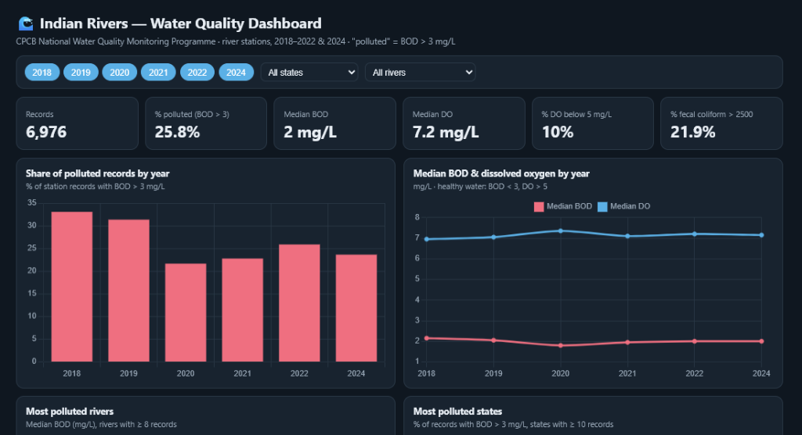
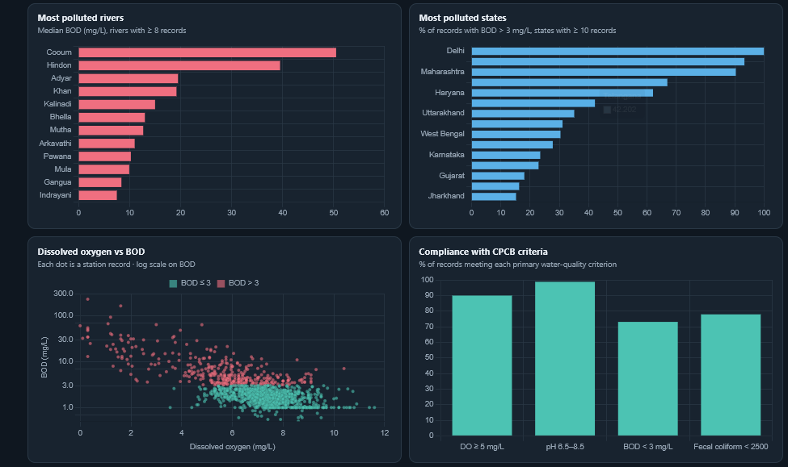
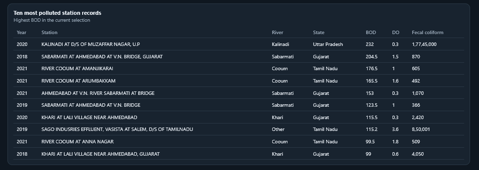
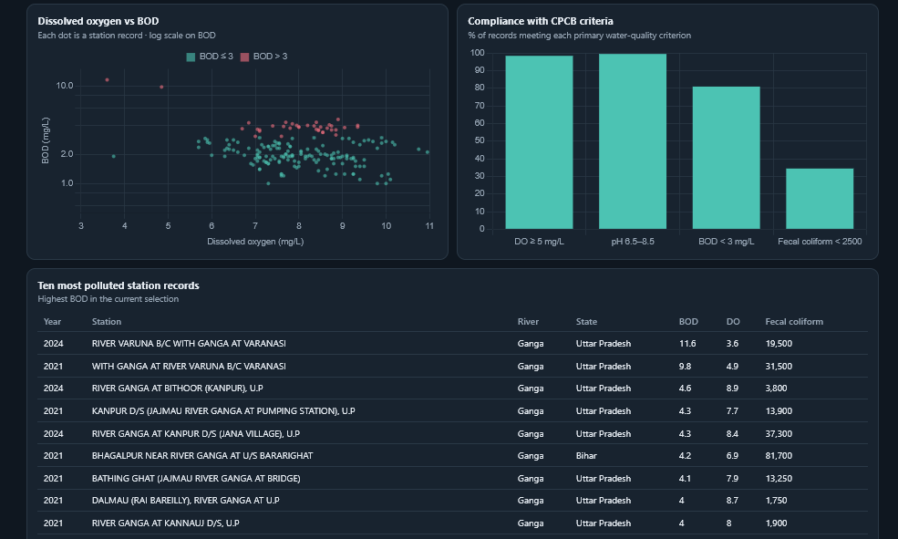

CPCB National Water Quality Monitoring Programme · river stations, 2018–2022 & 2024 · "polluted" = BOD > 3 mg/L
Water is life. Across India, our rivers—the lifelines of millions—face persistent environmental pressures. This analysis presents official monitoring data from the Central Pollution Control Board (CPCB) National Water Quality Monitoring Programme, covering river monitoring stations across six key years (2018–2022 & 2024).
Under CPCB guidelines, river water is categorized as "polluted" when Biochemical Oxygen Demand (BOD) exceeds 3 mg/L. This dashboard dataset tracks 6,976 station records across 573 unique river stations in 31 states and union territories, providing vital scientific evidence for policy and watershed management.
Explore the high-resolution dashboard screenshots capturing national trends, river rankings, state pollution shares, log-scale scatter analyses, and compliance metrics.

Highlights: Top metric bar displaying 6,976 total records, 25.8% polluted rate, median BOD of 2 mg/L, median DO of 7.2 mg/L, 10% low DO, and 21.9% fecal coliform violations. Includes temporal bar chart showing Share of polluted records by year (peaking at 33% in 2018 and remaining around 24–26% in recent years) and line chart for Median BOD & Dissolved Oxygen by year.

Highlights: Ranking of Most Polluted Rivers led by Cooum (median BOD ~50.5 mg/L), Hindon (~39.5 mg/L), Adyar (~19 mg/L), Khan (~19 mg/L), and Kalinadi (~15 mg/L). Most Polluted States shows Delhi with 100% polluted records, followed by Maharashtra (93%), Haryana (67%), and Telangana (42.2%). Also highlights a log-scale scatter plot of DO vs BOD and compliance rates against primary CPCB criteria.

Highlights: Detailed view of station records reporting extreme organic pollution. Peak reading was recorded at Kalinadi at D/S of Muzaffar Nagar, U.P in 2020 with a astronomical BOD of 232 mg/L, DO of 0.3 mg/L, and fecal coliform of 1,77,45,000 CFU/100ml.

Highlights: Filtered selection focusing specifically on River Ganga stations. Displays DO vs BOD distribution, CPCB criteria compliance, and the ten most polluted Ganga station records—led by River Varuna confluence at Varanasi (BOD 11.6 mg/L in 2024 and 9.8 mg/L in 2021) and Kanpur downstream stations.
The table below reproduces the exact data records featured in the CPCB dashboard screenshot for the highest recorded BOD values in the national selection:
| Year | Station Name | River | State | BOD (mg/L) | DO (mg/L) | Fecal Coliform (CFU/100ml) |
|---|---|---|---|---|---|---|
| 2020 | KALINADI AT D/S OF MUZAFFAR NAGAR, U.P | Kalinadi | Uttar Pradesh | 232.0 | 0.3 | 1,77,45,000 |
| 2018 | SABARMATI AT AHMEDABAD AT V.N. BRIDGE, GUJARAT | Sabarmati | Gujarat | 204.5 | 1.5 | 870 |
| 2021 | RIVER COOUM AT AMANJIKARAI | Cooum | Tamil Nadu | 176.5 | 1.0 | 605 |
| 2021 | RIVER COOUM AT ARUMBAKKAM | Cooum | Tamil Nadu | 165.5 | 1.6 | 492 |
| 2021 | AHMEDABAD AT V.N. RIVER SABARMATI AT BRIDGE | Sabarmati | Gujarat | 153.0 | 0.3 | 1,070 |
| 2019 | SABARMATI AT AHMEDABAD AT V.N. BRIDGE | Sabarmati | Gujarat | 123.5 | 1.0 | 366 |
| 2020 | KHARI AT LALI VILLAGE NEAR AHMEDABAD | Khari | Gujarat | 115.5 | 0.3 | 2,420 |
| 2019 | SAGO INDUSRIES EFFLUENT, VASISTA AT SALEM, D/S OF TAMILNADU | Other | Tamil Nadu | 115.2 | 3.6 | 8,50,001 |
| 2021 | RIVER COOUM AT ANNA NAGAR | Cooum | Tamil Nadu | 99.5 | 1.8 | 509 |
| 2018 | KHARI AT LALI VILLAGE NEAR AHMEDABAD, GUJARAT | Khari | Gujarat | 99.0 | 0.6 | 4,050 |
| Year | Station Name | River | State | BOD (mg/L) | DO (mg/L) | Fecal Coliform (CFU/100ml) |
|---|---|---|---|---|---|---|
| 2024 | RIVER VARUNA B/C WITH GANGA AT VARANASI | Ganga | Uttar Pradesh | 11.6 | 3.6 | 19,500 |
| 2021 | WITH GANGA AT RIVER VARUNA B/C VARANASI | Ganga | Uttar Pradesh | 9.8 | 4.9 | 31,500 |
| 2024 | RIVER GANGA AT BITHOOR (KANPUR), U.P | Ganga | Uttar Pradesh | 4.6 | 8.9 | 3,800 |
| 2021 | KANPUR D/S (JAJMAU RIVER GANGA AT PUMPING STATION), U.P | Ganga | Uttar Pradesh | 4.3 | 7.7 | 13,900 |
| 2024 | RIVER GANGA AT KANPUR D/S (JANA VILLAGE), U.P | Ganga | Uttar Pradesh | 4.3 | 8.4 | 37,300 |
| 2021 | BHAGALPUR NEAR RIVER GANGA AT U/S BARARIGHAT | Ganga | Bihar | 4.2 | 6.9 | 81,700 |
| 2021 | BATHING GHAT (JAJMAU RIVER GANGA AT BRIDGE) | Ganga | Uttar Pradesh | 4.1 | 7.9 | 13,250 |
| 2021 | DALMAU (RAI BAREILLY), RIVER GANGA AT U.P | Ganga | Uttar Pradesh | 4.0 | 8.7 | 1,750 |
| 2021 | RIVER GANGA AT KANNAUJ D/S, U.P | Ganga | Uttar Pradesh | 4.0 | 8.0 | 1,900 |
Summary of national compliance against Central Pollution Control Board (CPCB) primary water-quality standards:
| Parameter / Standard | CPCB Target Threshold | National Compliance Rate | Violations / Non-Compliance Share |
|---|---|---|---|
| Dissolved Oxygen (DO) | ≥ 5 mg/L | 90.0% | 10.0% (DO < 5 mg/L) |
| pH Level | 6.5 – 8.5 | 98.0% | 2.0% out of range |
| Biochemical Oxygen Demand (BOD) | < 3 mg/L | 74.2% | 25.8% Polluted (BOD > 3 mg/L) |
| Fecal Coliform Bacteria | < 2,500 MPN/100ml | 78.1% | 21.9% Exceeded (> 2500) |
The CPCB river water quality dataset highlights both localized severe degradation and key areas of resilience. Key strategic interventions required include:
"Data-driven environmental monitoring is the foundational key to rejuvenating India's river ecosystems."